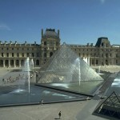

Mercatini di Natale di Trento
Date & Orari Apertura Mercatini
Tra i più famosi e frequentati di tutta l’area alpina, il Mercatino di Natale di Trento è ospitato nell’incantevole e storico scenario di Piazza Fiera dominata dalle mura medioevali della città.
Le casette in legno offrono i tradizionali addobbi per l’albero di Natale ed il presepe, oggetti d’artigianato, dolci e squisite specialità locali, articoli per un regalo d’atmosfera.
C’è anche una speciale sezione dedicata ai sapori nella quale è possibile gustare specialità gastronomiche dei Mercatini di Trento.
Trento
Scritto da Melissa De Cillis in data 1 Ago 2014 » Trento
Date e Orari Mercatini di Trento
I mercatini di Natale di Trento si tengono in Piazza Fiera e Piazza Cesare Battisti e vigono i seguenti orari:
- Tutti i giorni dalle 10.00 alle 19.30
- 26.12.2018 e 01.01.2019 dalle 12.00 alle 19.30
- 25.12.2018 chiuso
Storia di Trento
Come dimostrano alcuni resti rinvenuti sulla riva occidentale dell’Adige, l’area di Trento era popolata già durante il Neolitico. Tuttavia, la romana Trideum (dal nome delle tre colline che circondano la città) si affacciava sulla riva orientale del fiume, al di sotto dell’odierno centro storico. I romani la conquistarono verso la fine del I secolo a.C., dopo diverse lotte con le tribù locali. Durante questo periodo, la città ebbe notevole sviluppo economico e sociale, come testimonia un antico documento imperiale del 49 a.C., che la definisce “uno splendido Municipio”.
Dopo la caduta dell’Impero Romano, la zona fu governata in successione dai Goti, dai Longobardi e dai Franchi, divenendo poi parte del Sacro Romano Impero.
All’inizio del nuovo millennio il territorio cittadino venne smembrato, divenendo dominio in parte del Vescovato di Trento e in parte della Contea di Trento, che dal 1363 divenne parte dell’Impero Asburgico. Il Vescovato governò la città per ben otto secoli, durante i quali ci furono due importanti rivolte: quella del 1407, guidata dal Belenzani difensore dell’antica indipendenza, e quella del 1525, la famosa “rivolta rustica”, una vera e propria rivolta popolare.
Gli anni che seguirono, con l’espansione di Venezia, portarono Trento sempre più verso l’Impero e nel 1511, dopo la riconquista di Rovereto, il Vescovato dovete firmare un trattato di protezione con Massimiliano I d’Austria.
Tra il 1516 e il 1539 la città fu governata dal Cardinale Bernardo Clesio, promotore di un forte clima rinascimentale. Grazie a lui, Trento fu arricchì di splendidi edifici, come il nuovo palazzo nel Castello del Buonconsiglio e la chiesa di Santa Maria Maggiore, entrambi realizzati durante i preparativi per il Concilio di Trento. La città infine raggiunse il suo massimo splendore durante il governo della famiglia Madruzzo che conservò il potere per più di un secolo.
Nel 1796 la città fu conquistata dall’esercito Napoleonico ma nel 1815, con il Congresso di Vienna, Trento entrò a far parte dell’Impero Asburgico. In questo periodo, la città conobbe una forte crescita economica e urbanistica: il fiume Adige fu deviato e la città fu allargata verso nord e verso sud, con la creazione di nuovi quartieri residenziali e industriali. Inoltre, nel 1859, fu inaugurata la prima ferrovia nella Valle dell’Adige.
Durante il XIX secolo Trento (insieme a Trieste) divenne l’emblema del movimento per l’Unità d’Italia, proprio perché sotto la dominazione dell’Impero Austro-Ungarico. La dominazione austriaca terminò nel 1918 e Trento diventò parte del Regno d’Italia. Durante la Seconda Guerra Mondiale, alla caduta di Mussolini, la città fu conquistata dai tedeschi diventando parte del terzo Reich insieme a tutto il Trentino Alto Adige. Parte della città subì forti bombardamenti da parte degli alleati, che danneggiarono soprattutto la chiesa di Santa Maria e diversi ponti ritenuti strategici.
Dall’instaurazione della Repubblica Italiana, Trento ha conosciuto un importante sviluppo economico, insieme alla regione Trentino Alto Adige, divenuta Regione a Statuto Speciale.
HOTEL
BUS
Scegli il Mercatino di Natale che più fa per TE!
Newsletter
Iscriviti alla Newsletter dei Mercatini di Natale e ricevi tutti gli aggiornamenti via Mail!
Contatti
02.39523309 / 02.39523311
Lun-Sab | 9.00-18.00
327.1493890
Sempre attivo e Whatsapp
Perchè Viaggiare con Noi?
Cosa vedere a Trento
Trento è tradizionalmente legata a diverse culture, la germanica e la latina,
il cui miscuglio la rende unica nel suo genere.
Questa città ha un delizioso centro
storico, in cui si possono
ammirare monumenti che testimoniano la ricca storia della città: il Castello del
Buonconsiglio,
imponente maniero del XIII secolo, che fu sede del potere di Trento e residenza dei
Principi; il
Duomo, situato in una delle piazze più belle d’Italia e costruito come
adeguamento della precedente
basilica (che attualmente si può visitare utilizzando una scala all’interno della
cattedrale), è caratterizzato da
una facciata in stile romanico e al suo interno si trovano dei bellissimi affreschi del XIV
secolo.
Musei a Trento
Castel Thun
Il Castel
Thun, imponente e austero, fu la dimora di una delle più potenti
famiglie feudali della
regione.
Situato su una collina, in posizione panoramica rispetto all’intera Valle di Non, esso è
circondato da un complesso sistema di fortificazioni costituito da torri,
mura,
bastioni, cammino di ronda e fossato e risalente al Cinquecento. Alla stessa epoca risale la
potente Porta Spagnola, oltrepassata la quale si accede al ponte levatoio e
al
primo cortile. Qui si eleva l’imponente Palazzo Baronale, all’interno del quale, in numerose
sale, sono conservati i ricchi arredi originari ed un’interessante quadreria di
famiglia.
L’ambiente più pregevole e interessante è la cinquecentesca Stanza del
Vescovo,
interamente rivestita di legno di cirmolo.
Castel Thun è stato acquisito nel 1992 dalla Provincia autonoma di
Trento.
Edificio e arredi sono tuttora sottoposti a un attento e impegnativo intervento di restauro
e
studio.
Museo Diocesano
Tridentino di Scienze Naturali
Il Museo Diocesano Tridentino
Di Scienze Naturali venne fondato nel 1903 allo scopo di
salvaguardare il patrimonio
artistico della diocesi e con l’intento di farne strumento didattico per la
scuola d’arte e di
archeologia cristiana del Seminario Teologico. La sua prima sede fu collocata presso il
Seminario Minore, edificio
requisito con la Prima Guerra Mondiale per essere adibito a ospedale militare. Di
conseguenza, le raccolte furono
smembrate e ricoverate presso la sagrestia della Cattedrale ed altri depositi
periferici.
Solo nel 1963, in
occasione del IV centenario del Concilio di Trento, il Museo poté avere una
sede stabile accanto
alla Cattedrale di S. Vigilio, in Palazzo Pretorio, antica residenza dei Principi Vescovi.
Si trattò di una sorta di
rifondazione del Museo, che ora acquisiva una sede definitiva e centrale. Tuttavia non tutti
gli ambienti del
palazzo erano stati restaurati, non tutte le raccolte avevano trovato adeguata illustrazione
nel primo assetto
espositivo. Nel 1991 Mons. Iginio Rogger promosse una nuova, radicale ristrutturazione del
palazzo (progetto arch.
Glauco Marchegiani). Con il coordinamento del vice direttore, arch. Domenica
Primerano, venne
avviato al contempo lo studio delle raccolte, il restauro di opere precedentemente
conservate nei depositi, la
ridefinizione del percorso espositivo e il nuovo progetto di allestimento, affidato agli
architetti Vittoria Wolf e
Massimo Iarussi.
Al museo compete anche la custodia della basilica
paleocristiana di S. Vigilio
e dei reperti archeologici rinvenuti nel corso degli scavi effettuati nel sottosuolo della
Cattedrale tra il 1964 e
il 1977.
Museo Storico del
Trentino
Il Museo Storico del Trentino
ospita mostre temporanee e permanenti, queste ultime situate nelle
Gallerie, due veri tunnel stradali qui collocati dall’ottobre 2007, in
contemporanea con l’apertura delle nuove gallerie che hanno liberato il quartiere di
Piedicastello dal traffico della tangenziale. Dopo alcuni lavori di adeguamento strutturale,
dal dicembre 2009 le Gallerie sono uno spazio espositivo permanente, con una superficie
complessiva di 6000 metri quadrati. La Galleria bianca propone spazi destinati alla
didattica, alla formazione, all’approfondimento. Uno spazio è riservato agli eventi
temporanei e si può inoltre ammirare un grande murale dedicato all’autonomia
trentina. Nella Galleria nera si sviluppa invece l’abecedario, con i suoi ventun lemmi,
insieme al racconto soggettivo di testimoni e alla selezione di oggetti scelti per
rappresentare “provvisoriamente” il Trentino. Questi contenuti varieranno nel tempo, ci sarà
spazio per altre testimonianze, per altri oggetti, per altre parole-chiave.
Museo Diocesiano
Tridentino di Scienze Naturali
Il Museo Tridentino di Scienze
Naturali è un ente pubblico che opera nel campo delle scienze
naturali, con particolare attenzione al territorio alpino e all’ambito trentino. Nelle
proprie sale il Museo propone esposizioni di storia naturale. Possiede inoltre una fornita
biblioteca specialistica, un’aula magna, un bookshop, laboratori di ricerca ed aule per la
didattica. Il Museo promuove la cultura scientifica con l’obiettivo di renderla accessibile
al grande pubblico e presta particolare attenzione al proprio ruolo educativo. Perciò ha
sviluppato una rete di istituzioni museali e centri di ricerca diffusa nel
territorio trentino che persegue l’innovazione della didattica, della divulgazione e delle
metodologie di educazione permanente.
Cucina di Trento
La provincia di Trento è organizzata in valli, all’interno delle quali nell’arco dei secoli le tradizioni si sono sviluppate con peculiarità diverse a causa della morfologia dell’area. Le differenze si possono percepire anche dal punto di vista gastronomico, sebbene le cucine delle varie valli si basino sulle stesse materie prime. In comune ci sono sono ad esempio i prodotti caseari, i piccoli frutti di bosco nella preparazione dei dolci e i cibi arrivati dalla dominazione austriaca, come i canederli e lo strudel.
In generale, tra una valle e l’altra, si ricordano le seguenti specialità: il bro’ brusà (letteralmente il brodo bruciato), la carne salada, la trota alla grappa, i fagioli en bronzon, la mosa (una zuppa densa a base di farina), la panada (una zuppa di pane), la polenta di patate, la minestra de zanzarele (grumi di pasta cotta), la minestra di fregoloti (una minestra a base di pasta cotta nel latte), l’orzetto alla trentina (una ricetta antichissima, risalente quasi al XV secolo), gli oseleti scapadi (involtini di carne e speck) ed il tronco del pontesel (a base di cane e farina).
Tra i dolci, numerosissimi, si ricordano la torta ai mirtilli neri, la torta de fregoloti, il tronco di castagne, gli Zelten alla trentina ed i grostoli.